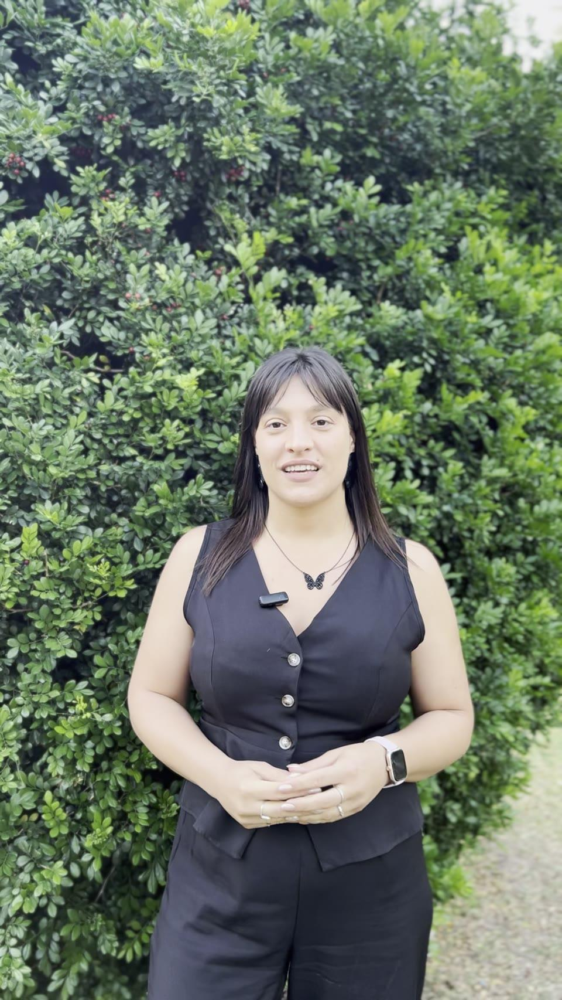

Descubrí OSUCMA
Fundación OSUCMA · Paraná, Entre Ríos
Promovemos la detección temprana del cáncer de mama y acompañamos a mujeres y familias con información, contención emocional y acceso a recursos médicos.
Descubrí OSUCMA

Mirá y escuchá
Un video corto donde te contamos quiénes somos y por qué promovemos la detección temprana. Encontrá este y más materiales en nuestra galería multimedia.
Ver toda la galería